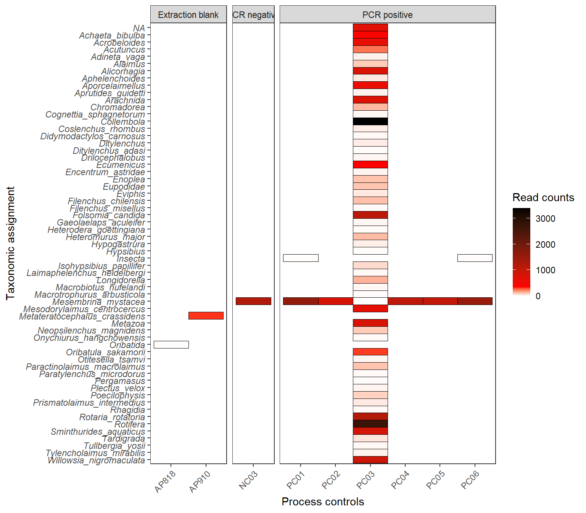
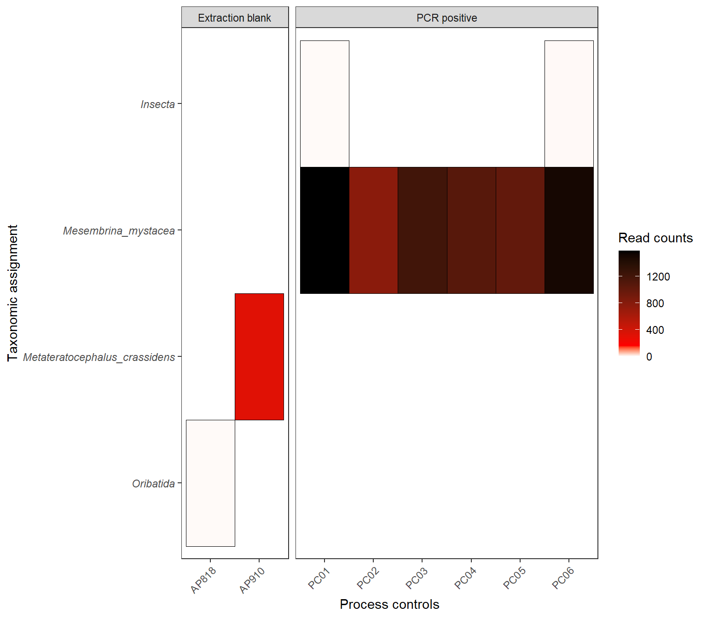
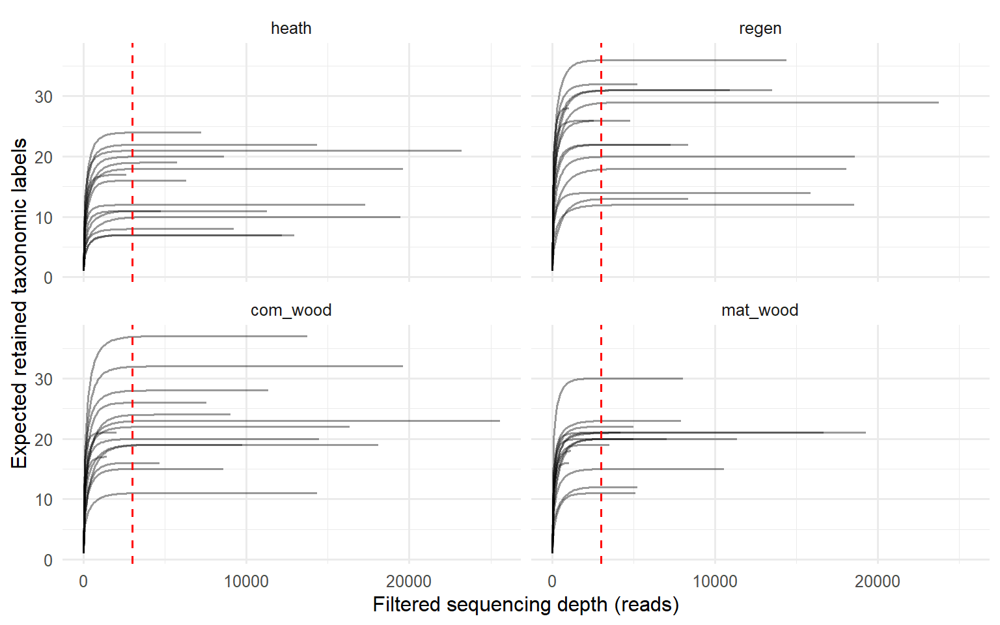
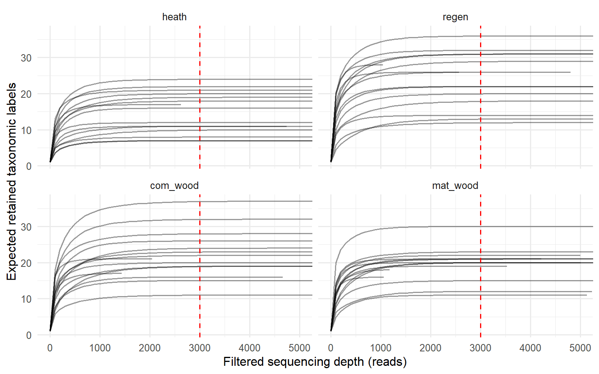
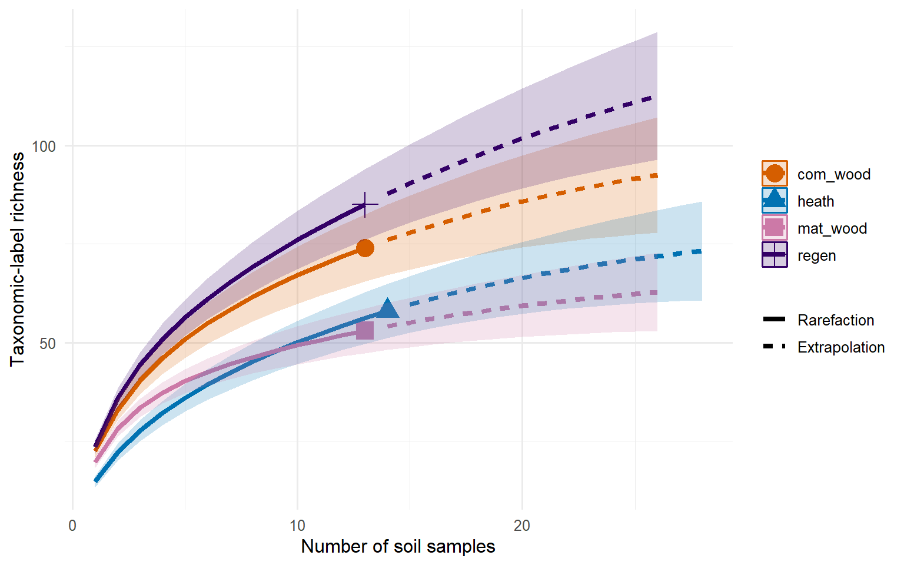

We will cover it in this session
Raw data following sequencing and bioinformatic analysis are not yet
ready to be used to learn about the environment. Here, we will go
through the checks and steps you should do to have a working dataset
that you can trust.
We will achieve this by:
- Preparing our working environment.
- Consider assumptions, reshape data, and join taxonomy.
- Check laboratory controls for potential sources of
contamination.
- Apply filters to remove contamination, and other weak-signal
data.
- Join environmental metadata.
- Prepare community matrices alongside the associated metadata.
- Explore sequencing depth with rarefaction curves
- Explore sampling effort with species accumulation curves.
- Export outputs.
Here, we will use the example of an 18S dataset targeting metazoan
invertebrates in a Scottish landscape and across four habitat types,
heath, regen, commercial woodland, and mature woodland.
1. Prepare the working environment
Installing packages
First, we need to prepare our environment, by installing the packages
that contain the functions that we will use. It only needs doing once
per device.
install.packages(c("here", "tidyverse", "janitor", "vegan", "iNEXT", "knitr"))
After installing, we load them into the session, this needs doing
every time we open R. You may need to adjust file paths to the source of
your files.
library(here)
library(tidyverse)
library(janitor)
library(vegan)
library(iNEXT)
library(knitr)
Analysis settings
We declare a few values in advance, as it makes it easier to explore
how different filtering decisions affect the results. These include the
confidence thresholds for taxonomic assignments and other relevant
values.
The values below reproduce the thresholds in the original workflow.
They are choices for this dataset rather than universal defaults.
# Taxonomic ranks
tax_ranks <- c(
"species", "genus", "family", "order",
"class", "phylum", "kingdom")
# Habitat types in the data
habitat_levels <- c(
"heath", "regen", "com_wood", "mat_wood"
)
# Filter thresholds
confidence_cutoff <- 0.7 # Minimum taxonomic assignment confidence 70%
relative_cutoff <- 0.001 # 0.1% filter applied to read data
min_reads <- 3000 # Rarefaction based filter of samples with at least 3000 reads.
positive_control_taxon <- "Mesembrina_mystacea" # Positive control used during PCR
A 70% confidence cutoff is the recommendation by the designers of the
taxonomic classifier, called RDP naïve Bayesian
classifier. A 0.1% filter is also typically used in eDNA studies to
dismiss nuisance detections and focus on ecologically relevant data. A
few samples were further removed if they did not have at least 3,000
reads, supported by rarefaction analysis.
Load data tables
Now we load our data. This will be a combination of data you hold,
such as environmental metadata, and read and taxonomy data that is sent
to you.
Read and taxonomy data will typically be in a “text” format, and
split in several ways. Here, we have an ASV_table, which
has Amplicon Sequence Variant (ASV) IDs as rows (i.e., each unique DNA
molecule), and sample IDs as columns. The values within the cells
correspond to the number of reads for a given ASV in a given sample. See
example below.
Then, we have the ASV_tax. This table has the same ASV
IDs alongside their taxonomic assignment and the confidence of that
assignment.
We also have a conversion table from lab ID to field ID for our
samples. This is because often, laboratories will use their own internal
identifiers of samples, which are not the same as yours.
Lastly, the metadata. The four are connected through identifiers, and
can be merged as follows:
asv_id connects read counts to taxonomy.lab_id and sample_id connect laboratory
records to field efforts and environmental metadata
ASV counts
The count table is initially wide: each laboratory sample occupies a
separate column.Typically, we want to work with a long format, where
sample_id is one column, we will address this later.
# load ASV_table
asv_tab <- read_tsv(here("data/session0", "ASV_table.tsv")) %>%
clean_names() %>%
mutate(asv_id = str_trim(asv_id))
# Print example data
kable(asv_tab %>% head() %>% select(1:6), caption = "ASV read counts: first six rows and columns")
ASV read counts: first six rows and columns
| 146d6fc15fefb75e7a982625e7e3c5ab |
14490 |
0 |
0 |
187 |
0 |
| 507876bb4535e3327b7eeffa6989eec8 |
0 |
15364 |
0 |
0 |
3943 |
| c9d0c148a589dff54d25a05b913b823b |
0 |
0 |
11076 |
0 |
0 |
| e18210d3088610f6032a84a5efbc41d8 |
2696 |
0 |
0 |
0 |
0 |
| b1ebf7bd7bc1d293aaf572b8d2c591fc |
0 |
0 |
46 |
0 |
0 |
| 582070a3e64747a276e9ac9520a2c1a2 |
0 |
0 |
0 |
0 |
0 |
Taxonomic assignments
This file contains the prepared taxonomy information and associated
confidence for each ASV.
# Load taxonomy
asv_tax <- read_csv(here("data/session0", "ASV_tax_session0.csv")) %>%
clean_names() %>%
mutate(asv_id = str_trim(asv_id))
# Print example data
kable(asv_tax %>% head() %>% select(asv_id, kingdom, phylum, confidence), caption = "Taxonomic assignments: first six records")
Taxonomic assignments: first six records
| 146d6fc15fefb75e7a982625e7e3c5ab |
Metazoa |
Annelida |
0.70 |
| 507876bb4535e3327b7eeffa6989eec8 |
Metazoa |
Annelida |
0.63 |
| c9d0c148a589dff54d25a05b913b823b |
Metazoa |
Annelida |
0.72 |
| e18210d3088610f6032a84a5efbc41d8 |
Metazoa |
Annelida |
0.80 |
| b1ebf7bd7bc1d293aaf572b8d2c591fc |
Metazoa |
Arthropoda |
1.00 |
| 582070a3e64747a276e9ac9520a2c1a2 |
Metazoa |
Annelida |
1.00 |
Note that we have used a .csv file, rather than a tsv. This is
because this file is already modified from its raw format after
bioinformatics. This is not reproduced here for clarity and flow, but
briefly, using the PR2 taxonomic reference library during bioinformatic
analysis produces a taxonomic classification the ranks of which do not
align well to classic taxonomy. We have used the taxize
package to overcome this.
Laboratory-to-field lookup
The lookup connects lab IDs to field IDs. We also need to do some
cleaning here to make sure IDs match later, e.g., change letters to
uppercase.
# Load Lab to field lookup
lab_field_id <- read_csv(here("data/session0", "lab_field_id.csv")) %>%
clean_names() %>%
rename(field_id_lab = field_id) %>%
mutate(
lab_id = str_to_upper(str_trim(lab_id)),
field_id_lab = na_if(str_trim(field_id_lab), ""),
.keep = "none"
)
# Print example data
kable(lab_field_id %>% head() %>% select(lab_id, field_id_lab), caption = "Lab to field lookup: first six records")
Lab to field lookup: first six records
| AP788 |
CC28_00 |
| AP789 |
CC28_05 |
| AP790 |
CC28_15 |
| AP791 |
FeNC_00 |
| AP792 |
FeNC_05 |
| AP793 |
FeNC_15 |
2. A Few Things to Consider
Mixed Taxonomy
ASVs may be assigned to species level, or to higher taxonomic ranks.
Here, we use something called mixed taxonomy: for each ASV we take the
lowest rank available.
# Creating consensus taxonomic name
asv_tax <- asv_tax %>%
mutate(
consensus_name = coalesce(
species, genus, family, order,
class, phylum, kingdom))
Our consensus label represents different taxonomic ranks, which is
why we refer to taxa rather than species.
Giving reads data the right “shape” and joining to taxonomy
data
The ASV_table is in a wide format, with one row per ASV and one
column per sample (using laboratory IDs). We will convert it into a long
format, with one roe per AV-sample combination, and a column with read
counts.
A long format makes it easier to filter recored, compare samples, and
visualise data with tools like ggplot. It also allows sotring a lot more
information per sample alongside the read data, such as environmental
metadata.
We will remove combinations with zero reads to keep the table
manageable. They will come back later when we build the community
matrix. In the same breath, we can add the taxonomy information.
# Pivot table from wide to long, and add taxonomy information
asv_long <- asv_tab %>%
pivot_longer(
cols = -asv_id,
names_to = "lab_id",
values_to = "reads") %>%
filter(reads > 0) %>%
left_join(asv_tax, by = "asv_id")
# Display the first six records with a selection of columns.
asv_long %>%
arrange(lab_id) %>%
select(asv_id, lab_id, reads, consensus_name, kingdom, phylum) %>%
head() %>%
kable(caption = "ASV read counts and taxonomy: first six records")
ASV read counts and taxonomy: first six records
| 146d6fc15fefb75e7a982625e7e3c5ab |
ap788 |
14490 |
Cognettia_sphagnetorum |
Metazoa |
Annelida |
| e18210d3088610f6032a84a5efbc41d8 |
ap788 |
2696 |
Buchholzia_fallax |
Metazoa |
Annelida |
| 3694798c002738b51b99e1edf27a2375 |
ap788 |
98 |
Alicorhagia |
Metazoa |
Arthropoda |
| b13e70f70986081b1368da657f490f01 |
ap788 |
19 |
Mesenchytraeus_flavus |
Metazoa |
Annelida |
| 82588a76a2919aafbe06d97f5e45a8d0 |
ap788 |
28 |
Cernosvitoviella_atrata |
Metazoa |
Annelida |
| 54a91a4c1e156817503d330c1063a32b |
ap788 |
14 |
Brachychthoniidae |
Metazoa |
Arthropoda |
We can now use this table to explore the controls.
3. Inspect the Contamination and Controls
A lot of the complexity surrounding eDNA metabarcoding is due to the
fact that it deals in DNA and that DNA is in fact, in the environment.
This means that we can contaminate the samples with our own DNA, but
also that background DNA may enter the samples after it has been
collected. More importantly, samples may contaminate each other
(cross-contamination). We want to avoid this as much as possible, which
we do by establishing “clean” workflows, using gloves, sterilising
equipment, working in clean positive-pressure environments, and so
forth. However, at the end of the day, it is impossible to fully avoid
contamination. Which is why we work with three types of controls.
- Extraction controls: are extraction tubes where no
sample is added, but the same process and reagents are added as if a
sample was in it and DNA was being extracted. They are used to monitor
contamination during the DNA extraction. We used 7, one per extraction
batch.
- Positive controls: are used at the library
preparation stage, and have all the reagents plus a known source of DNA.
Here we have used the DNA of a fly. It monitors whether lab equipment
and kits are working correctly. We used 6, one per library.
- Negative controls: are also used during library
preparation. Like DNA extractions, they receive all the reagents, but no
DNA. It monitors contamination during library preparation. Like PCs, we
used six, one per library.
Let’s check the controls, first we must gather them into one place
and separate them from the true samples.
# Identify controls and sum their reads by taxonomic assignment.
controls <- asv_long %>%
mutate(lab_id = str_to_upper(str_trim(lab_id))) %>%
left_join(lab_field_id, by = "lab_id") %>%
mutate(sample_type = case_when(
str_detect(lab_id, "^PC") ~ "PCR positive",
str_detect(lab_id, "^NC") ~ "PCR negative",
str_detect(coalesce(field_id_lab, ""),
regex("^ext|blank", ignore_case = TRUE)) ~ "Extraction blank",
TRUE ~ "Field sample")) %>%
filter(sample_type != "Field sample") %>%
group_by(lab_id, sample_type, consensus_name,
species, genus, family, order, class, phylum, kingdom) %>%
summarise(reads = sum(reads), .groups = "drop")
Visualise controls
Here we create a tile heatmap to explore what was detected in each
control. Do the positive controls resemble one another? Are there any
unexpected detections in the negative controls?
# Combine records sharing a plotted label and draw the control heatmap.
controls %>%
group_by(lab_id, sample_type, consensus_name) %>%
summarise(reads = sum(reads), .groups = "drop") %>%
ggplot(aes(x = lab_id, y = fct_rev(factor(consensus_name)), fill = reads)) +
geom_tile(colour = "black") +
scale_fill_gradientn(name = "Read counts",
colours = c("white", "red", "black"),
values = c(0, 0.1, 1), limits = c(0, NA)) +
facet_grid(. ~ sample_type, scales = "free_x", space = "free_x") +
labs(x = "Process controls", y = "Taxonomic assignment") +
theme_bw() +
theme(panel.grid = element_blank(),
axis.text.x = element_text(angle = 45, hjust = 1),
axis.text.y = element_text(face = "italic"))

This looks problematic. PC03 has a full suite of species, many in the
thousands of reads, but none of our control taxa. We also have a
negative control, NC03, with the same taxa as we find in the other
positive controls. You may have picked up that there was a mix up, and
that a sample was assigned the label of a positive control, and the
negative control the label of a positive control. These things
happen.
Fixing labelling mistakes
The control results revealed a labelling mix-up: PC03 is
actually sample AP845, while NC03 is positive
control PC03. We correct these IDs in the long table, then
rebuild the controls and repeat the plot.
# Correct the mislabelled laboratory IDs
asv_long <- asv_long %>%
mutate(lab_id = str_to_upper(str_trim(lab_id))) %>%
mutate(lab_id = case_when(
lab_id == "PC03" ~ "AP845",
lab_id == "NC03" ~ "PC03",
TRUE ~ lab_id))
# Read and correct the sample IDs from the wide count table for later use
count_table_ids <- str_to_upper(str_trim(setdiff(names(asv_tab), "asv_id")))
count_table_ids <- case_when(count_table_ids == "PC03" ~ "AP845",
count_table_ids == "NC03" ~ "PC03",
TRUE ~ count_table_ids)
NB: for the purposes of this tutorial, we often overwrite datasets
and variables to keep the code and naming structure lean. Thus, when
running the code, sections should be run one by one in order, and avoid
re-running chunks repeatedly. In need be, previous chunks need to be
re-run too.
Now we plot again.
# Rebuild controls using the corrected IDs
controls <- asv_long %>%
left_join(lab_field_id, by = "lab_id") %>%
mutate(sample_type = case_when(
str_detect(lab_id, "^PC") ~ "PCR positive",
str_detect(lab_id, "^NC") ~ "PCR negative",
str_detect(coalesce(field_id_lab, ""),
regex("^ext|blank", ignore_case = TRUE)) ~ "Extraction blank",
TRUE ~ "Field sample")) %>%
filter(sample_type != "Field sample") %>%
group_by(lab_id, sample_type, consensus_name,
species, genus, family, order, class, phylum, kingdom) %>%
summarise(reads = sum(reads), .groups = "drop")
# Repeat the heatmap with the corrected control assignments
controls %>%
group_by(lab_id, sample_type, consensus_name) %>%
summarise(reads = sum(reads), .groups = "drop") %>%
ggplot(aes(x = lab_id, y = fct_rev(factor(consensus_name)), fill = reads)) +
geom_tile(colour = "black") +
scale_fill_gradientn(name = "Read counts",
colours = c("white", "red", "black"),
values = c(0, 0.1, 1), limits = c(0, NA)) +
facet_grid(. ~ sample_type, scales = "free_x", space = "free_x") +
labs(x = "Process controls", y = "Taxonomic assignment") +
theme_bw() +
theme(panel.grid = element_blank(),
axis.text.x = element_text(angle = 45, hjust = 1),
axis.text.y = element_text(face = "italic"))

This is better.
Here we see the two extraction blanks that yielded DNA. In AP818 it
belongs to Oribatida (a group of soil mites), in AP910 to
Metaterotocephalus crassidens a type of microscopic nematode.
Mesembrina mystacea is a positive control, and is found
consistently across all six of them. Two positive controls also have
insect DNA, which probably corresponds to unassigned DNA of the same
fly. Because M. crassidens has several hundred reads, we will
establish a threshold, such that for this species to be considered
present in a sample, it has to have at least one more read count than it
does in this extraction control. This contributes to reduce potential
contamination.
4. Cleaning the data
We will apply several filters to clean the data from contamination,
weak signals, and background noise.
Keeping taxonomic assignments with high confidence
First, and before we remove contaminants, we will remove detections
that have low confidence (<70%). The reason of doing it in this order
will be clearer in the next step.
# Exclude controls and retain confident taxonomic assignments ----
field_detections <- asv_long %>%
anti_join(controls, by = "lab_id") %>%
filter(confidence >= confidence_cutoff)
Combine ASVs with the same assignment
Multiple ASVs may be assigned to the same taxa. Including two or more
ASVs in the same sample. So we sum those, before we apply contamination
thresholds. This is why individual ASV confidence filter has to be
applied before contamination thresholds.
field_counts <- field_detections %>%
group_by(
lab_id, consensus_name,
across(all_of(tax_ranks))
) %>%
summarise(
reads = sum(reads),
.groups = "drop"
)
Contamination Thresholds
Now we prepare the contamination thresholds. For each taxa detected
in an extraction or negative control, we take the largest count
observed. This count will be subtracted from the corresponding
field-sample count.
control_thresholds <- controls %>%
filter(consensus_name != positive_control_taxon) %>%
group_by(across(all_of(tax_ranks))) %>%
summarise(
threshold = max(reads),
.groups = "drop")
Then, we combine the high confidence ASVs with the contamination
thresholds, and use them to remove potential contamination.
# Add thresholds to high confidence and merged ASV detections
field_corrected <- field_counts %>%
left_join(
control_thresholds,
by = tax_ranks) %>%
mutate(
threshold = replace_na(threshold, 0),
reads = pmax(reads - threshold, 0)) %>%
filter(reads > 0)
Final filter
Lastly, we apply one more filter. This is a general filter to remove
weak-signaled background noise. We use a 0.1% relative read frequency
threshold.
# Apply 0.1% relative read threshold
asv_clean <- field_corrected %>%
group_by(lab_id) %>%
mutate(relfreq = reads / sum(reads)) %>%
ungroup() %>%
filter(relfreq > relative_cutoff) %>%
# Recalculate totals after the low-frequency detections are removed.
group_by(lab_id) %>%
mutate(
total_reads = sum(reads),
relfreq = reads / total_reads
) %>%
ungroup()
At this point, our eDNA Metabarcoding dataset is ready for analysis.
We are only missing the environmental metadata.
7. Explore read-based rarefaction
Rarefaction curves lets us evaluate whether the “sampling effort”, in
our case, reading depth, is enough to capture the diversity within a
sample. It is strikingly simple, but very useful. For each sample, we
will sample one read at a time (or groups of 10s or 100s of reads), and
we will look at how many taxa we recover. We will do that repeatedly
until we run out of reads to take from the samples, and each time, we
look at the taxa we recover. If we find new taxa, we add them to the
previous figure of taxa. If we have enough “effort”, should run out of
new taxa before we run out of reads. If we plot this, we should see a
line that plateaus.
rarecurve_df <- rarecurve(
comm,
step = 100,
label = FALSE,
tidy = TRUE
) %>%
as_tibble() %>%
mutate(sample_id = as.character(Site)) %>%
# Attach habitat information to each sample's curve.
left_join(
metadata_cc %>% select(sample_id, treatment),
by = "sample_id",
relationship = "many-to-one"
)
## Warning in rarecurve(comm, step = 100, label = FALSE, tidy = TRUE): most
## observed count data have counts 1, but smallest count is 2
First we calculate it. Now we plot it. Don’t worry about the
warning.
The vertical line marks the proposed minimum filtered read depth.
p_rare <- ggplot(
rarecurve_df,
aes(x = Sample, y = Species, group = sample_id)
) +
geom_line(alpha = 0.4) +
geom_vline(
xintercept = min_reads,
linetype = "dashed",
colour = "red"
) +
facet_wrap(~ treatment) +
theme_minimal(base_size = 12) +
labs(
x = "Filtered sequencing depth (reads)",
y = "Expected retained taxonomic labels"
)
p_rare

We have drawn a vertical dashed line at 3,000 reads, based on an earlier
exploration of the data. We can see that after this point ,all lines
flatten.
We can zoom in further.
p_rare + coord_cartesian(xlim = c(0, 5000))

Some of the lines to the left of 3,000 are not yet flat. The issue with
these samples is that we have “missed” taxa in them, and thus they may
skew our metrics of richness.
At this point we have a choice. Increasing read depth typically leads
to increased taxonomic richness. To address this, we can rarefy our
data, this means that we only keep as many reads as there are in our
sample with the fewest reads. The problem with doing this, is that if
your lowest is too low, you might lose valuable
information from your other samples. Alternatively, if most samples have
flat curves, and only a few samples do not, it may be preferable to
remove those samples. Here, we have kept samples with at least 3,000
reads and then worked with relative read abundance instead of rarefied
reads. Both arrive at a similar destination.
Apply the minimum read-depth rule
As per our exploration we drop samples with fewer than 3,000
reads.
read_depth %>%
mutate(retained = total_reads >= min_reads) %>%
count(treatment, retained, name = "n_samples") %>%
kable()
| heath |
FALSE |
1 |
| heath |
TRUE |
14 |
| regen |
FALSE |
2 |
| regen |
TRUE |
13 |
| com_wood |
FALSE |
2 |
| com_wood |
TRUE |
13 |
| mat_wood |
FALSE |
2 |
| mat_wood |
TRUE |
13 |
We lose a total of seven samples out of 60, evenly spread across
habitat types. Now we re-build our community matrices after applying
this minimum reads threshold.
asv_final <- asv_cc %>%
filter(total_reads >= min_reads)
comm_keep <- comm[
rownames(comm) %in% asv_final$sample_id,
,
drop = FALSE
]
# Remove taxonomic labels with no detections in the retained samples.
comm_keep <- comm_keep[
,
colSums(comm_keep) > 0,
drop = FALSE
]
Because, we have removed data from the community matrix, we need to
match this with our metadata table. we also want them to have the same
order, so that they match in the internal machinery of our models.
metadata_keep <- metadata_cc %>%
slice(match(rownames(comm_keep), sample_id))
identical(rownames(comm_keep), metadata_keep$sample_id)
## [1] TRUE
Final Matrices
Because of the issues around using read counts (or relative read
counts), we might want to keep a presence-absence community matrix, and
a relfreq matrix. We will also export these.
comm_pa <- decostand(
comm_keep,
method = "pa"
)
comm_relfreq <- decostand(
comm_keep,
method = "total"
)
8. Species Accummulation Curves
In a similar way to how we have assesed whether read depth was
sufficient to capture sample-level richness. We can assess whether the
sample size was enough to capture habitat-level richness. These are
called species accummulation curves, and use the same process as
described above, only at sample-level, instead of read-level.
Here, we will use a package called iNEXT, which provides a more
robust workflow by using permutation to provide confidence intervals. We
must provide two things:
- The total number of samples per habitat.
- The number of those samples in which each taxonomic label was
detected.
This format of data is called incidence-frequency which we can
prepare from the presence-absence community matrix.
# Count the samples in which each taxon was detected, by habitat ----
incidence <- comm_pa %>%
as_tibble() %>%
mutate(treatment = metadata_keep$treatment) %>%
group_by(treatment) %>%
summarise(across(everything(), sum), .groups = "drop") %>%
pivot_longer(-treatment, names_to = "taxon", values_to = "frequency") %>%
filter(frequency > 0)
# Put the total sample count first in each habitat's iNEXT vector ----
incidence <- bind_rows(count(metadata_keep, treatment, name = "frequency"),
incidence)
inext_input <- split(incidence$frequency, incidence$treatment, drop = TRUE)
# Show both counts for up to three taxa per habitat ----
incidence %>%
group_by(treatment) %>%
mutate(total_samples = first(frequency)) %>%
filter(!is.na(taxon)) %>%
slice_head(n = 3) %>%
ungroup() %>%
select(Habitat = treatment, Taxon = taxon,
`Total samples` = total_samples,
`Samples with detections` = frequency) %>%
kable(caption = "Incidence frequencies by habitat and taxon")
Incidence frequencies by habitat and taxon
| heath |
Alicorhagia |
14 |
5 |
| heath |
Annelida |
14 |
12 |
| heath |
Arachnida |
14 |
9 |
| regen |
Alicorhagia |
13 |
11 |
| regen |
Annelida |
13 |
9 |
| regen |
Arachnida |
13 |
13 |
| com_wood |
Alicorhagia |
13 |
13 |
| com_wood |
Annelida |
13 |
6 |
| com_wood |
Arachnida |
13 |
13 |
| mat_wood |
Alicorhagia |
13 |
13 |
| mat_wood |
Annelida |
13 |
7 |
| mat_wood |
Arachnida |
13 |
13 |
Here we have an example for a few taxa across the four habitats, with
the number of samples per habitat (Incidence), and then how many of
those are positive for each taxa (Frequency).
Estimate richness accumulation
iNEXT can provide a number of richness indicators, which we can
select by changing the parameter q. Here we use q = 0 for
taxon richness.
# keeps results reproduceable between runs.
set.seed(123)
# Run iNEXT function on richness
inext_results <- iNEXT(
inext_input,
q = 0,
datatype = "incidence_freq",
nboot = 100)
After running this we can plot the curves.
# Use in-built functions to plot iNEXT curves.
ggiNEXT(inext_results, type = 1) +
theme_minimal(base_size = 12) +
labs(
x = "Number of soil samples",
y = "Taxonomic-label richness",
colour = "Habitat",
fill = "Habitat"
)
## Warning: `aes_string()` was deprecated in ggplot2 3.0.0.
## ℹ Please use tidy evaluation idioms with `aes()`.
## ℹ See also `vignette("ggplot2-in-packages")` for more information.
## ℹ The deprecated feature was likely used in the iNEXT package.
## Please report the issue at <https://github.com/AnneChao/iNEXT/issues>.
## This warning is displayed once per session.
## Call `lifecycle::last_lifecycle_warnings()` to see where this warning was
## generated.

Here, our curves are far from flat suggesting that a substantial
component of biodiversity has not been captured within each habitat at
the current sample size of up to 15 samples per habitat.
Due to the mathematical properties of a curve like this, which
increases asymptotically towards the maximum taxon richess, we can
extrapolate a predicted value for these maxima.
# Extract figures from iNEXT output and estimate % richness captured.
inext_results$AsyEst %>%
filter(Diversity == "Species richness") %>%
select(
Assemblage, Observed, Estimator, LCL, UCL ) %>%
mutate(percentage = round((Observed/Estimator)*100,2)) %>%
kable(digits = 1)
| com_wood |
74 |
106.9 |
74.0 |
141.4 |
69.2 |
| heath |
58 |
82.2 |
58.0 |
108.1 |
70.6 |
| mat_wood |
53 |
70.3 |
53.0 |
101.8 |
75.4 |
| regen |
85 |
148.2 |
96.1 |
200.3 |
57.4 |
We have captured between 57% and 75% of the predicted total richness
across habitats. Note that the experimental design was not intended for
a complete biodiversity inventory as much as a test of differences
between habitat states.
9. Save the prepared data for the next session
We save the filtered read counts, presence–absence data, and matching
metadata in data/session1/. The community tables have one
row per retained sample and one column per taxon. All three files
include sample_id so we can match the rows in Session
1.
# Export outputs
write_csv(as_tibble(comm_keep, rownames = "sample_id"),
here("data", "session1", "session0_metazoa_counts.csv"))
write_csv(as_tibble(comm_pa, rownames = "sample_id"),
here("data", "session1", "session0_metazoa_presence_absence.csv"))
write_csv(metadata_keep,
here("data", "session1", "session0_metazoa_metadata.csv"))
Session 1 will recover these datasets.
Software versions
## R version 4.6.2 (2026-10-29 ucrt)
## Platform: x86_64-w64-mingw32/x64
## Running under: Windows 11 x64 (build 26300)
##
## Matrix products: default
## LAPACK version 3.12.1
##
## locale:
## [1] LC_COLLATE=English_United Kingdom.utf8
## [2] LC_CTYPE=English_United Kingdom.utf8
## [3] LC_MONETARY=English_United Kingdom.utf8
## [4] LC_NUMERIC=C
## [5] LC_TIME=English_United Kingdom.utf8
##
## time zone: Europe/London
## tzcode source: internal
##
## attached base packages:
## [1] stats graphics grDevices utils datasets methods base
##
## other attached packages:
## [1] knitr_1.51 iNEXT_3.0.2 vegan_2.7-3 permute_0.9-10
## [5] janitor_2.2.1 lubridate_1.9.5 forcats_1.0.1 stringr_1.6.0
## [9] dplyr_1.2.1 purrr_1.2.2 readr_2.2.0 tidyr_1.3.2
## [13] tibble_3.3.1 ggplot2_4.0.3 tidyverse_2.0.0 here_1.0.2
##
## loaded via a namespace (and not attached):
## [1] sass_0.4.10 generics_0.1.4 stringi_1.8.7 lattice_0.23-1
## [5] hms_1.1.4 digest_0.6.39 magrittr_2.0.5 evaluate_1.0.5
## [9] grid_4.6.2 timechange_0.4.0 RColorBrewer_1.1-3 fastmap_1.2.0
## [13] plyr_1.8.9 Matrix_1.7-6 rprojroot_2.1.1 jsonlite_2.0.0
## [17] mgcv_1.9-4 scales_1.4.0 jquerylib_0.1.4 cli_3.6.6
## [21] crayon_1.5.3 rlang_1.2.0 bit64_4.8.0 splines_4.6.2
## [25] withr_3.0.3 cachem_1.1.0 yaml_2.3.12 otel_0.2.0
## [29] tools_4.6.2 parallel_4.6.2 reshape2_1.4.5 tzdb_0.5.0
## [33] vctrs_0.7.3 R6_2.6.1 lifecycle_1.0.5 snakecase_0.11.1
## [37] bit_4.6.0 vroom_1.7.1 MASS_7.3-66 cluster_2.1.8.3
## [41] pkgconfig_2.0.3 pillar_1.11.1 bslib_0.10.0 gtable_0.3.6
## [45] Rcpp_1.1.1-1.1 glue_1.8.1 xfun_0.57 tidyselect_1.2.1
## [49] rstudioapi_0.18.0 farver_2.1.2 nlme_3.1-171 htmltools_0.5.9
## [53] labeling_0.4.3 rmarkdown_2.31 compiler_4.6.2 S7_0.2.2
Home | Next: Session
1
